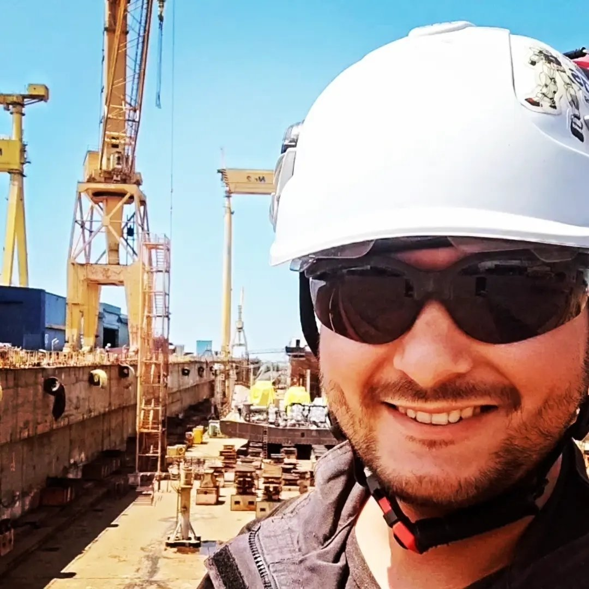

Timur-Iulian Ali

Summary
Currently working as a Lvl. 2 NDT Technican on VT/PT/MT/UT methods however I have a strong desire to switch to the IT sector as a Web Developer. Started a Web Developer training in August 2023 and I am open to be challanged with frontend projects that I can add to my portfolio.
Education
- Bachelor of Engineering - "Constanta Maritime University", Constanta, Romania (ongoing)
- CAD Drafter, IT Technican - "Ion Banescu Technical Highschool", Mangalia, Romania (2005-2009)
Work Experience
-
Lvl. 2 NDT Technician - SC. CSD S.R.L
April 2023 - Ongoing
- Conduct NDT Examinations using VT/MT/PT/UT methods for various clients
- Calibration and maintenance of examination equipent
- Responsable for creating reports and communicating the results to the clients and office
Lvl. 2 NDT Technician - SC. NDT Ship Service S.R.L
May 2022 - April 2023
-
Conduct NDT Examinations using MT/PT/UT methods for various projects inside DAMEN Shipyard - Mangalia like:
- Sunrise Wind - Maritime electrical convertor platform for Orsted
- Djibouti - Submersible dock for the State of Djibouti
- Project 3035 - Space rocket launching platform for Blue Origin
- Project 6023, 6024 - Research Ice Breakers for Svesda
-
Senior RBS Associate : Andon Cord - Amazon Development Center S.R.L
October 2021 - May 2022
- Part of the Brazilian Market Andon Cord team, I was in charge with tracking down and solving recurring
issues of Amazon owned merchandise
- Some of the daily tasks would include but not limited to:
Contacting leads in charge of acquisition of problematic merchandise, stop-lose prevention by disabling
the buy-box, adding more relevant information about the product so that the customer can make a more
informed purchas
- Additional duties would include: development of inside applications and tools used in our process (the
Brazilian market is a new and growing branch for Amazon) using front end development languages
like JavaScript; language and issue resolving assistance for the junior RBS associates; brainstorming
sessions, photo editing, video editing
Skills and Certifications
Languages
- Romanian - Native
- English - Fluent
- Spanish - Professional Working Proficiency
- Portuguese - Professional Working Proficiency
Certificates
- VT/MT/PT/UT Lvl. 2 Certificate ISO 9712
- B-VCA Basic Elements Of Safety - Pontifex
- HSE Inspector SR EN ISO 9001/ ISO 14001/ ISO 22000 (COR 325723)
Computer Skills
- MS Office
- Google Drive (Docs, Sheets, Slides, Forms)
- Email: merge, filters, folders, rules
- Social Media: Facebook, Twitter, Instagram
- Graphics: Photoshop, Illustrator, Canva, HTML/CSS, CAD
People Skills
- Active listening
- Teamwork
- Collaboration
- Conflict resolution
- Relationship building
- Self-motivation
Driving Licence
Other
Contact me
© Timur-Iulian Ali. All rights reserved.